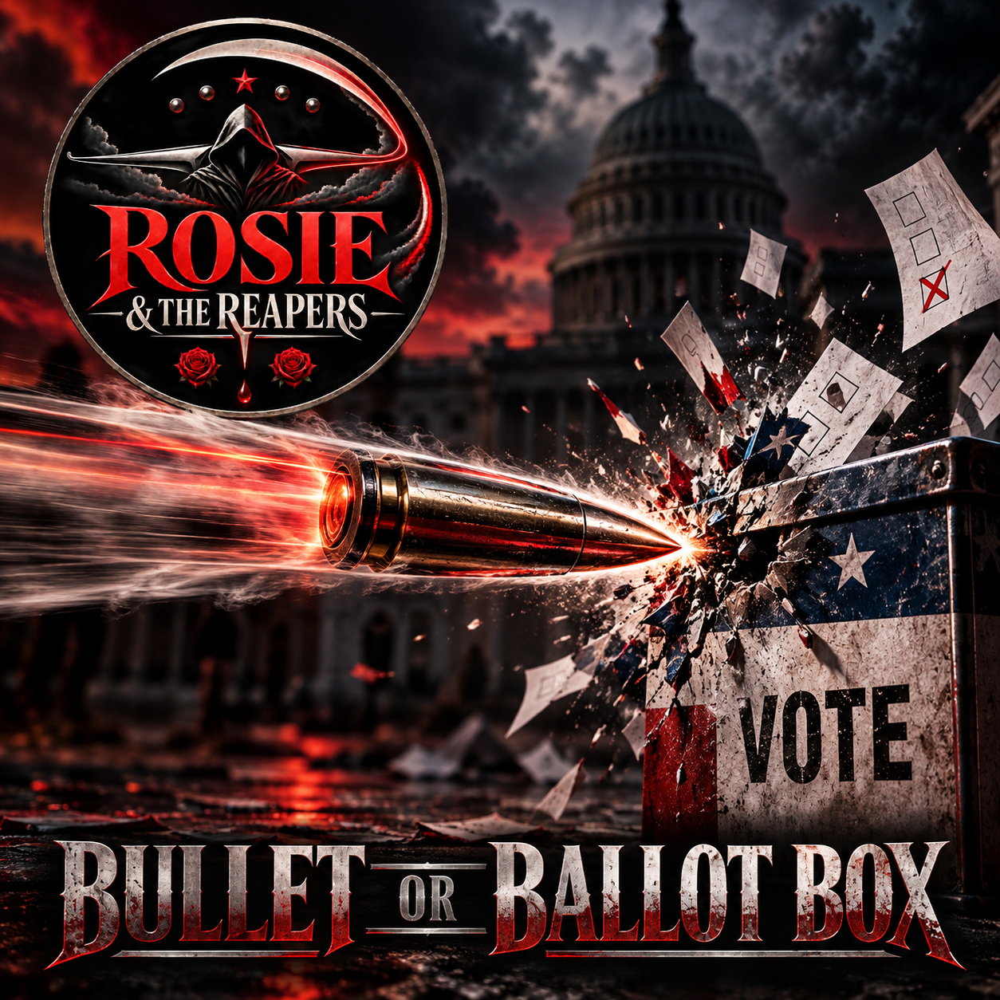

Reaping Socialism Through Song
Bullet
or Ballot Box
Reform or Revolution.
The Destination Remains the Same.
LISTEN
Bullet or Ballot Box

Streaming links will appear here as the release becomes available across music services.
LYRICS
The Lyrics
Full lyrics will be placed here.
BEHIND THE SONG
The Argument Behind the Music
This section will explain the subject, historical background, argument, satire and creative choices behind the song.
HISTORICAL CONTEXT
References & Context
Historical events, organizations, people and ideas referenced in the lyrics will be documented here.
SOURCES
Research & Documentation
Source citations and research links will appear here.